Nombre de poissons : 8
Nombre d'échographies transversales : 24
Nombre d'écho transversales moyennes par poisson : 3.00
Nombre d'échographies longitudinales : 11Résultats sur l’échantillon de test
Rappels échantillon de test
Global
Vrai annotations
Nombre d'échographies transversales non vides : 24
Nombre d'échographies longitudinales non vides : 10
Nombre d'oeufs : 54Prédictions
Nombre d'échographies transversales non vides : 24
Nombre d'échographies longitudinales non vides : 11
Nombre d'oeufs : 47Volumes et fécondité par poisson
| id poisson | image_id | echelle | volume_cavite_pred | volume_gonade_pred | volume_cavite_true | volume_gonade_true | poids_poisson | long_poisson | age_poisson | volume_median_oeufs_mm3_true | volume_median_oeufs_mm3_pred | volume_moyen_oeufs_mm3_true | volume_moyen_oeufs_mm3_pred | fecondite_pred | fecondite_true | |
|---|---|---|---|---|---|---|---|---|---|---|---|---|---|---|---|---|
| 0 | 356434 | 0004596 | 3.8 | 17.668215 | 9.619949 | 18.306250 | 11.447509 | 116.3 | 212 | None | 10.905562 | 16.703966 | 9.876946 | 15.088622 | 575.908043 | 1049.694506 |
| 1 | 356859 | 0004646 | 3.8 | 11.222048 | 5.180873 | 10.551703 | 5.868178 | 126.0 | 230 | 2+ | 11.982479 | 13.649391 | 12.349415 | 11.678467 | 379.568063 | 489.729869 |
| 2 | 363066 | 0004898 | 3.8 | 9.405675 | 4.785227 | 9.876945 | 5.170205 | 67.3 | 178 | 1+ | 8.997912 | 7.253101 | 8.183569 | 8.763686 | 659.749065 | 574.600481 |
| 3 | 406070 | 0006010 | 3.8 | 7.973238 | 4.223478 | 8.209837 | 4.423296 | 89.4 | 198 | 1+ | 10.454494 | 11.893622 | 9.758140 | 12.099719 | 355.104412 | 423.099927 |
| 4 | 406703 | 0006218 | 3.8 | 5.668985 | 1.604238 | 5.985427 | 1.693049 | 57.5 | 174 | 1+ | 7.927613 | 9.897030 | 9.897542 | 9.897030 | 162.092887 | 213.563568 |
| 5 | 406707 | 0006222 | 3.8 | 12.366112 | 5.079058 | 12.422471 | 5.364627 | 81.9 | 192 | 1+ | 14.579701 | 16.339912 | 14.579701 | 16.339912 | 310.837513 | 367.951757 |
| 6 | 426735 | 0006943 | 3.8 | 10.062925 | 4.985957 | 10.104317 | 4.390080 | 81.8 | 191 | None | 10.946132 | 13.265390 | 11.499589 | 13.483709 | 375.862115 | 401.062183 |
| 7 | 427237 | 0007130 | 3.8 | 10.047068 | 4.301428 | 10.565793 | 4.058139 | 75.5 | 188 | 1+ | 7.756373 | 10.331596 | 9.161230 | 11.402917 | 416.337199 | 523.200642 |
================ Volume des gonades ================
Vérification des surfaces des gonades et de la cavité - Annotations
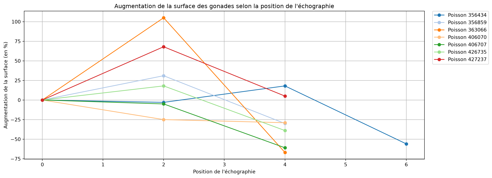
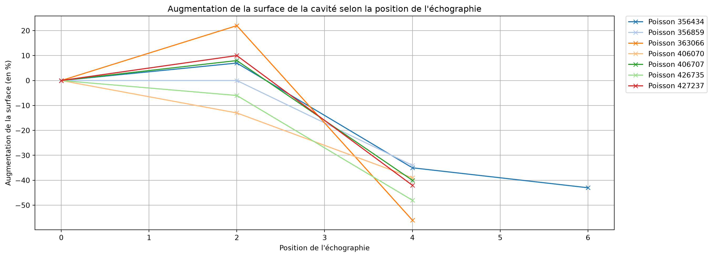
Vérification des surfaces des gonades et de la cavité - Prédictions
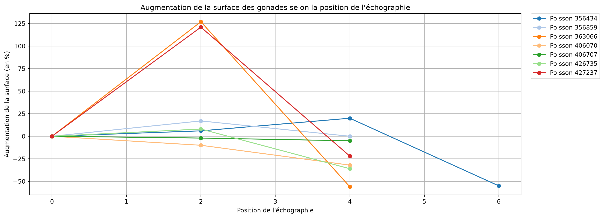
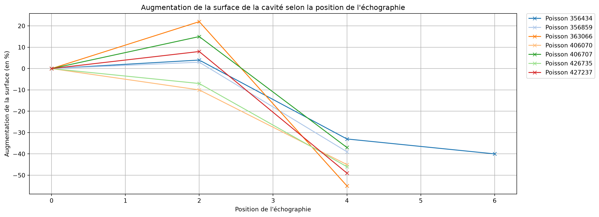
Détection des anomalies selon l’augmentation de la surface
True - Poisson : 406070 - [0, 1, 0] -Problème sur l'écho à la position 0.0 (diminution surface gonade : 0.0%)Distribution du volume des gonades
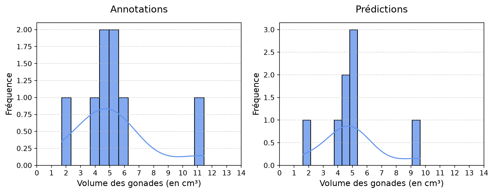
Relations entre surfaces des gonades et de la cavité - Annotations
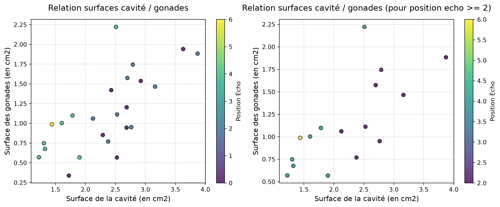
Corrélation : 0.70
Corrélation (pour position echo >= 2) : 0.71Relations entre surfaces des gonades et de la cavité - Prédictions

Corrélation : 0.60
Corrélation (pour position echo >= 2) : 0.68Diférence entre les volumes des gonades prédits et annotés
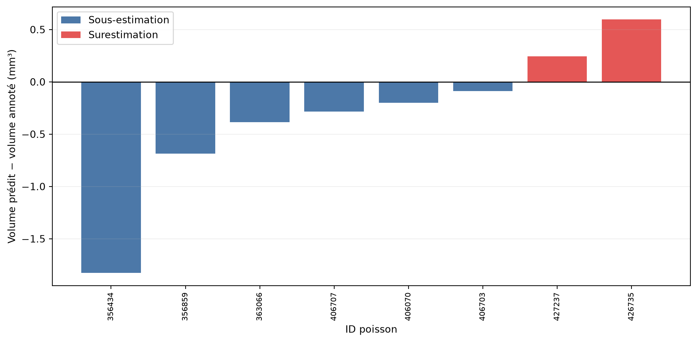
Relations entre le volume prédit et le volume annoté des gonades
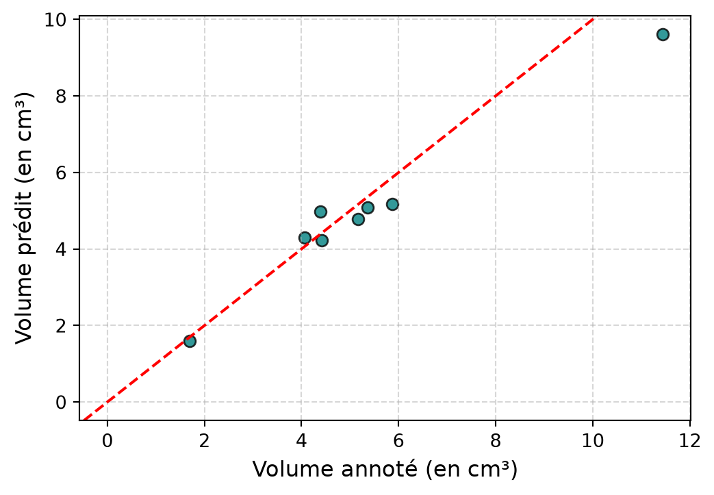
volume_gonade_true volume_gonade_pred
0 11.447509 9.619949
1 5.868178 5.180873
2 5.170205 4.785227
3 4.423296 4.223478
4 1.693049 1.604238
5 5.364627 5.079058
6 4.390080 4.985957
7 4.058139 4.301428Relations entre le volume des gonades et le poids des poissons
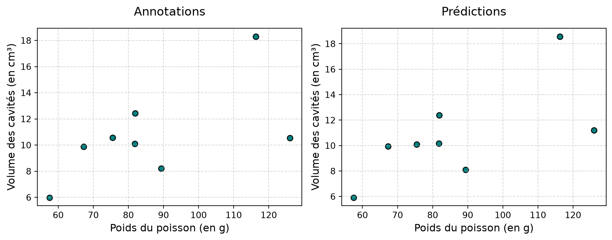
Corrélation annotations : 0.72
Corrélation prédictions : 0.70Relations entre le volume des cavités et le poids des poissons
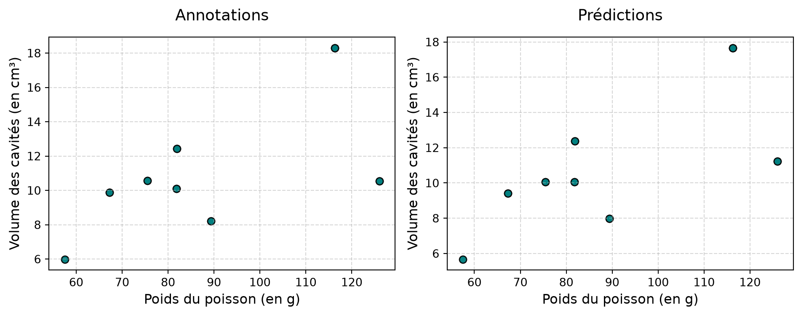
Corrélation Annotations : 0.62
Corrélation prédictions : 0.68================ Volume des oeufs ================
Distribution du volume des oeufs
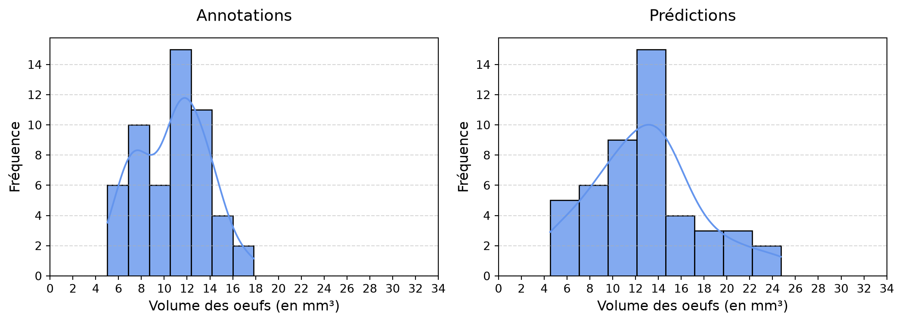
Différence entre les volumes médians des œufs prédits et annotés
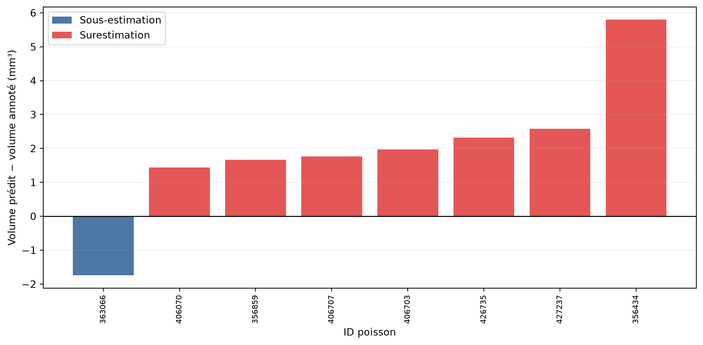
Relations entre le volume médian prédit et le volume médian annoté des oeufs

Volume du i-ème plus gros œuf par poisson - Annotations
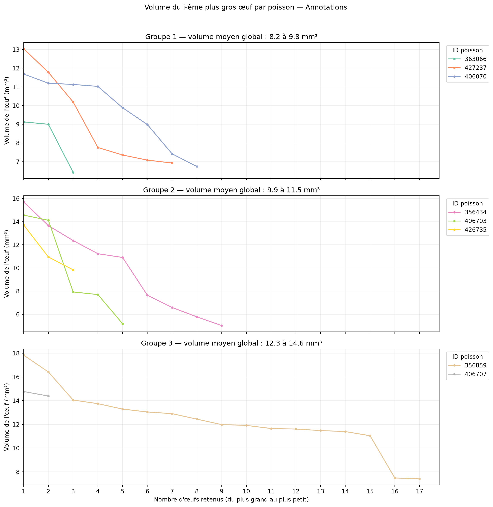
Distribution du nombre d’œufs par échographie
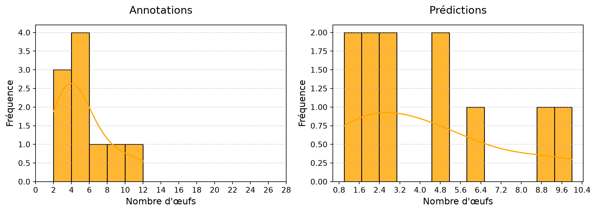
Nombre moyen d'œufs par échographie : 4.27 (Q1 : 2, Q3 : 6)Annotations

Prédictions
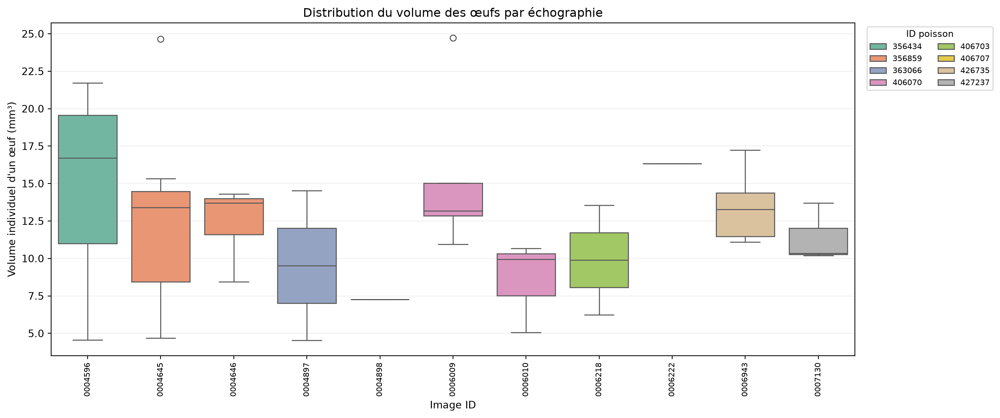
Comparaison du volume des œufs par poisson : annotations vs prédictions
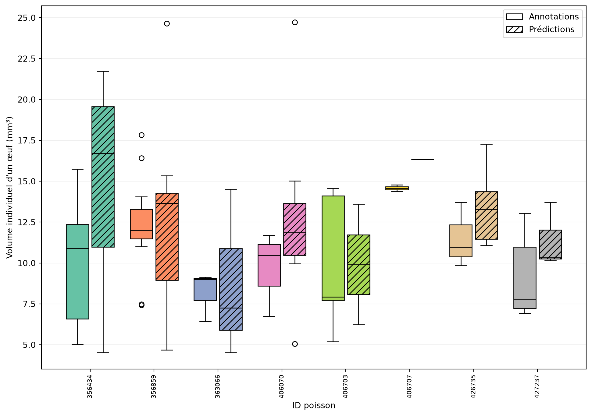
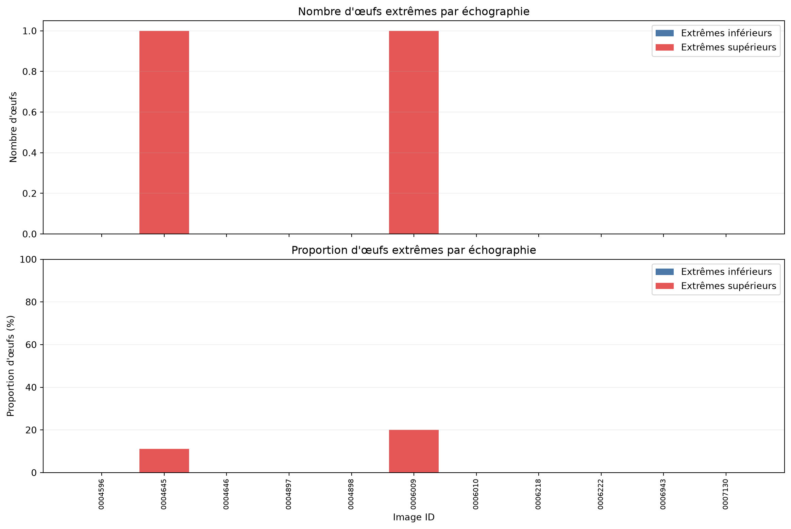
Relation entre le volume médian des oeufs et des gonades
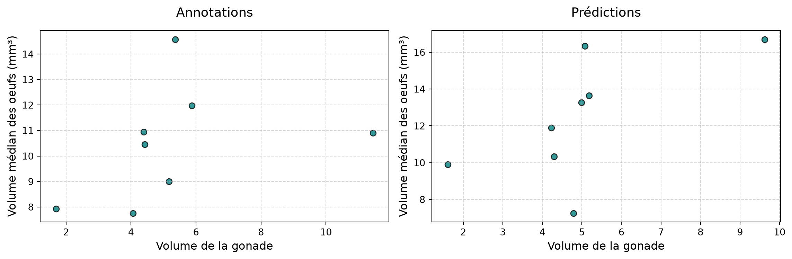
Corrélation annotations : 0.36665748464309983
Corrélation prédictions : 0.636199266076963================ Volume des gonades ================
Distribution de la fécondité
Nombre de poissons avec une fécondité calculable : 8 sur 8 (Annotations)
Nombre de poissons avec une fécondité calculable : 8 sur 8 (Predictions)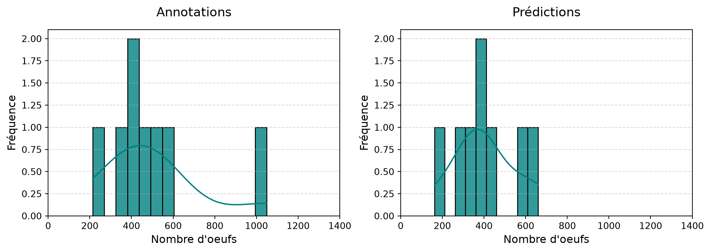
Relations entre la fécondité et les caractéristiques des poissons - Annotations
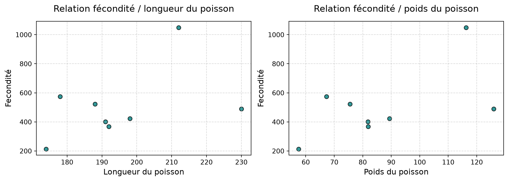
Corrélation fécondité / longueur : 0.4498312740428807
Corrélation fécondité / poids : 0.5818156785671436Relations entre la fécondité et les caractéristiques des poissons - Prédictions
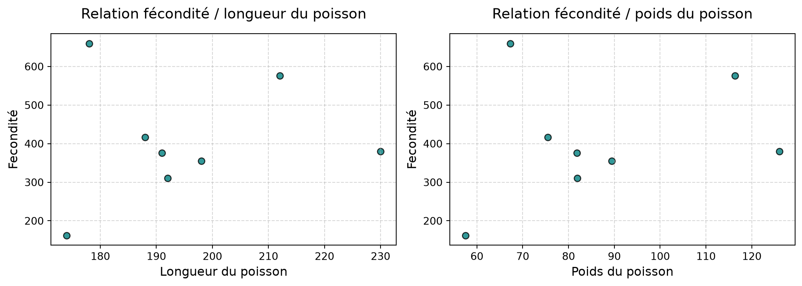
Corrélation fécondité / longueur : 0.15046544157272776
Corrélation fécondité / poids : 0.2595165945400706Relation entre la fécondité prédite et annotée
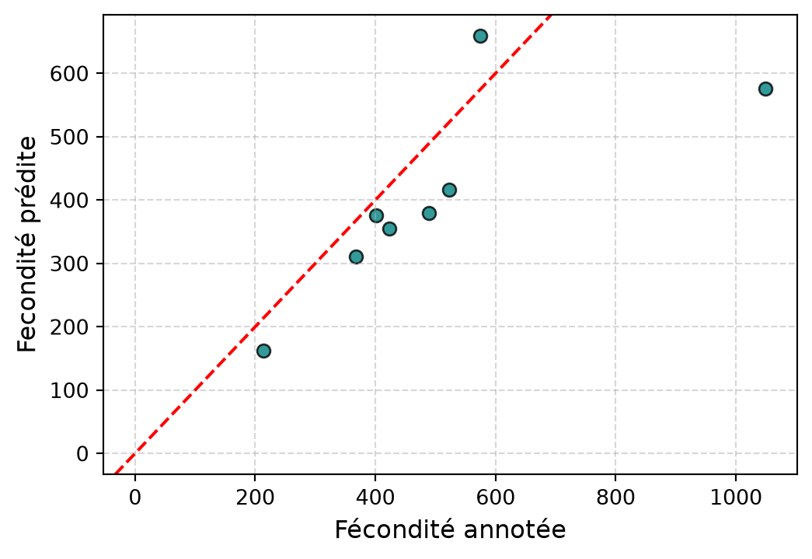
| id poisson | image_id | echelle | volume_cavite_pred | volume_gonade_pred | volume_cavite_true | volume_gonade_true | poids_poisson | long_poisson | age_poisson | volume_median_oeufs_mm3_true | volume_median_oeufs_mm3_pred | volume_moyen_oeufs_mm3_true | volume_moyen_oeufs_mm3_pred | fecondite_pred | fecondite_true | |
|---|---|---|---|---|---|---|---|---|---|---|---|---|---|---|---|---|
| 0 | 356434 | 0004596 | 3.8 | 17.668215 | 9.619949 | 18.306250 | 11.447509 | 116.3 | 212 | None | 10.905562 | 16.703966 | 9.876946 | 15.088622 | 575.908043 | 1049.694506 |
| 1 | 356859 | 0004646 | 3.8 | 11.222048 | 5.180873 | 10.551703 | 5.868178 | 126.0 | 230 | 2+ | 11.982479 | 13.649391 | 12.349415 | 11.678467 | 379.568063 | 489.729869 |
| 2 | 363066 | 0004898 | 3.8 | 9.405675 | 4.785227 | 9.876945 | 5.170205 | 67.3 | 178 | 1+ | 8.997912 | 7.253101 | 8.183569 | 8.763686 | 659.749065 | 574.600481 |
| 3 | 406070 | 0006010 | 3.8 | 7.973238 | 4.223478 | 8.209837 | 4.423296 | 89.4 | 198 | 1+ | 10.454494 | 11.893622 | 9.758140 | 12.099719 | 355.104412 | 423.099927 |
| 4 | 406703 | 0006218 | 3.8 | 5.668985 | 1.604238 | 5.985427 | 1.693049 | 57.5 | 174 | 1+ | 7.927613 | 9.897030 | 9.897542 | 9.897030 | 162.092887 | 213.563568 |
| 5 | 406707 | 0006222 | 3.8 | 12.366112 | 5.079058 | 12.422471 | 5.364627 | 81.9 | 192 | 1+ | 14.579701 | 16.339912 | 14.579701 | 16.339912 | 310.837513 | 367.951757 |
| 6 | 426735 | 0006943 | 3.8 | 10.062925 | 4.985957 | 10.104317 | 4.390080 | 81.8 | 191 | None | 10.946132 | 13.265390 | 11.499589 | 13.483709 | 375.862115 | 401.062183 |
| 7 | 427237 | 0007130 | 3.8 | 10.047068 | 4.301428 | 10.565793 | 4.058139 | 75.5 | 188 | 1+ | 7.756373 | 10.331596 | 9.161230 | 11.402917 | 416.337199 | 523.200642 |